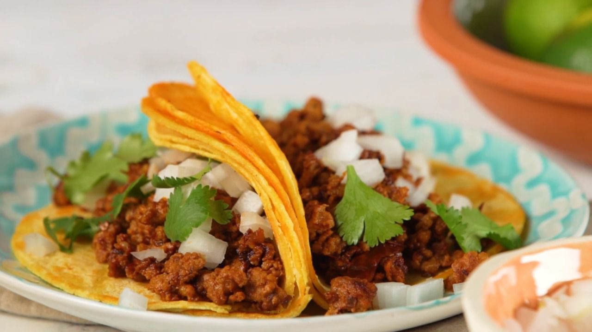

Easy to Make Street Tacos!

These chorizo street tacos are the best! With just 5 easy steps you can
have street taco quality poops at home instead of the porta-potty behind the
food truck!
Ingredients:
- 1 chorizo sausage link, casing removed and meat crumbled
- 2 tablespoons chipotle peppers in adobo sauce
- 4 corn tortillas
- 2 tablespoons chopped onion, or to taste
- 2 tablespoons chopped fresh cilantro, or to taste (Optional)
Directions:
- Combine crumbled chorizo and chipotle peppers in adobo sauce in a bowl.
- Heat a skillet over medium-high heat; add chorizo mixture and cook until
crisp, 5 to 7 minutes. Transfer to a plate, reserving grease in the skillet.
- Heat tortillas in reserved grease in the skillet over medium heat until
warmed, 1 to 2 minutes per side. Stack 2 tortillas for each taco, then
fill with chorizo, onion, and cilantro.